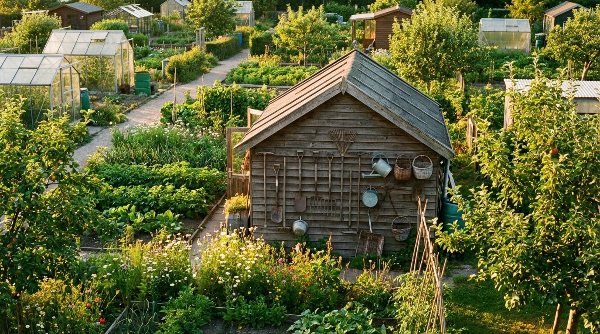

Portfolio
Recente Projecten
Een selectie uit meer dan 200 gerealiseerde tuinen in de regio Amsterdam.


Al 17 jaar ontwerpen, bouwen en onderhouden wij buitenruimtes die uw leven verrijken. Van intiem stadstuintje tot weelderig landschapsontwerp.
Elk project begint met luisteren. Wij vertalen uw wensen naar een buitenruimte die past bij uw levensstijl, woning en budget.
Van eerste schets tot gedetailleerd beplantingsplan. Wij ontwerpen tuinen die in elk seizoen verrassen, met oog voor lichtval, privacy en groei.
Ons team van vakmensen realiseert uw droomtuin. Bestrating, waterpartijen, pergola's, verlichting en siergrassen — alles uit eigen hand.
De juiste plant op de juiste plek. Wij selecteren inheemse en klimaatbestendige soorten voor een tuin die met de jaren alleen maar mooier wordt.
Seizoensgebonden onderhoud zodat uw tuin er het hele jaar verzorgd uitziet. Snoeien, bemesten, onkruid verwijderen en gazonverzorging.
Duurzame schuttingen, hekwerken en groene erfafscheidingen die privacy bieden zonder aan sfeer in te leveren. Douglas, hardhout of composiet.
Sfeervolle LED-verlichting die uw tuin ook na zonsondergang tot leven brengt. Padverlichting, spotlights op bomen en sfeerverlichting in borders.

Opgericht in 2009 door tuinarchitect Willem de Groot, is GroenAtelier uitgegroeid tot een van de meest gewaardeerde hoveniersbedrijven in de regio Amsterdam. Ons team van 14 vakmensen deelt dezelfde passie: buitenruimtes creeren die mensen gelukkig maken.
“Onze achtertuin was een kale vlakte. GroenAtelier heeft er een groene oase van gemaakt waar we elke avond van genieten. Het ontwerp was precies wat we voor ogen hadden, maar dan beter.”
“Professioneel van begin tot eind. De mannen werkten netjes, hielden zich aan de planning en het resultaat is schitterend. Onze buren zijn jaloers — die hebben nu ook een afspraak gemaakt.”
“Wij laten al drie jaar ons tuinonderhoud doen door GroenAtelier. Altijd stipt op tijd, altijd even vriendelijk. Je merkt dat deze mensen van planten houden. Aanrader voor iedereen in Amsterdam.”
Een selectie uit meer dan 200 gerealiseerde tuinen in de regio Amsterdam.
De meest gestelde vragen van onze opdrachtgevers op een rij.
De kosten variëren sterk per project. Een gemiddelde achtertuin van 40 m² begint rond de €4.500 voor een basispakket met bestrating en beplanting. Bij een volledig ontwerp met sierbestrating, verlichting en waterpartij rekent u op €8.000 tot €15.000. Wij maken altijd een vrijblijvende offerte na het eerste adviesgesprek, zodat u precies weet waar u aan toe bent.
Na goedkeuring van het ontwerp plannen wij de aanleg meestal binnen 3 tot 6 weken. Een gemiddelde achtertuin is in 5 tot 10 werkdagen aangelegd, afhankelijk van de complexiteit. Grote projecten met waterpartijen of overkappingen kunnen 2 tot 3 weken duren. Het ontwerptraject zelf neemt 1 tot 3 weken in beslag.
Ja, wij werken het hele jaar door. De wintermaanden zijn ideaal voor hardscape-werkzaamheden zoals bestrating, schuttingen en overkappingen. Beplanting vindt bij voorkeur plaats in het voor- of najaar, wanneer planten het best aanslaan. Onze planners stemmen het project af op de optimale seizoenen voor elk onderdeel.
Absoluut. Wij bieden drie onderhoudspakketten: Basis (4x per jaar), Standaard (6x per jaar) en Premium (maandelijks). Elk pakket omvat seizoensgebonden snoeiwerk, onkruidbeheer en een jaarlijkse tuininspectie. Zo blijft uw tuin er het hele jaar op zijn best uitzien, zonder dat u er zelf naar hoeft om te kijken.
Uiteraard — uw input is essentieel. Wij starten altijd met een uitgebreid intakegesprek bij u thuis, waar we uw wensen, leefstijl en budget bespreken. Op basis daarvan maken wij een conceptontwerp dat we in een tweede afspraak gezamenlijk finetunen. Wij leveren pas een definitief plan op als u er volledig achter staat.

Plan een vrijblijvend adviesgesprek en ontdek wat GroenAtelier voor uw buitenruimte kan betekenen. Wij komen graag bij u langs voor een eerste kennismaking.